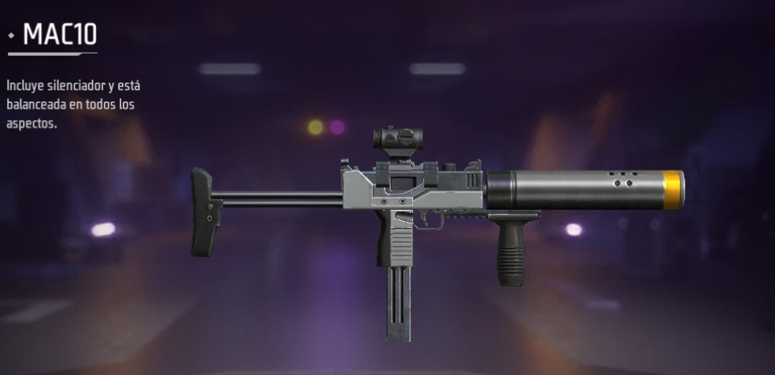

Armamento y equipo básico en free fire
Free Fire un juego de acción en tiempo real, muy entretenido, con disparos en 3era persona y una calidad gráfica aceptable; en este juego puedes interactuar con personas de
diferentes partes del mundo, hacer amigos, incluso crear tu propia escuadra o clan. Siendo uno de los Battle Royal más descargados, que cuenta con más de 1000 millones de
descargas, este juego ha logrado llamar la atención de todos.
En Fiiin :) si estas leyendo esto es xq lo has jugado pero quizás no has sabido escoger bien las armas y para eso estoy aquí para darte algunos consejos sobre las primeras armas
a buscar, además de las mejores según mi criterio, claro, empecemos.
Descarga Free Fire aquí
Inicio del Juego
Lo primero que debemos hacer en Free Fire es elegir un área done jugar, un lugar donde habitualmente halla equipamiento de calidad e intentar siempre caer en este sitio, recomendable (Hangar,
mill, Factory, Clock Tower). Además de claramente la zona marcada en azul es la zona donde más cantidad de armas, equipamientos y suministros habrá, aunque llamará mucho la
atención y la mayoría de jugadores intentará caer en ese sitio.
Luego asegurar un arma de cualquier tipo, preferiblemente una SMG, o sea un arma de gran velocidad de disparo (útil en combates cercanos o frente a frente), Ejemplo: MP5, MAC10,
Thomson, etc. Lo siguiente sería buscar un chaleco nivel III, aunque si no encuentras ninguno reunir 300 monedas y obtener uno en cualquier máquina dispensadora, sería lo más recomendable.
Mejores Armas del Free Fire
A continuación te estaré dejando un pequeño resumen de las que según mi propia experiencia son las mejores armas del Free Fire después de las antes mencionadas y claro con la ayuda de algunos amigos que me han hablado muy bien de ellas. Aquí se las dejo:
Rifles:
- SCAR: (arma de nivel) perfecta en velocidad de disparo,precisión, además de un buen alcance, al mejorarla nivel III alcanza un perfecto equilibrio convirtiendola en un rifle muy recomendable
tanto para encuentros a distancia, debido a su presición y buen alcance, y para encuentros cercanos donde su velocidad de disparo y daño la hacen servir como una smg más a pesar de ser un rifle.
Desventajas: muchas personas se han quejado de su alto sonido al disparar, además debido a su gran velocidad de disparo hacen que gaste gran cantidad de municiones, así que recomiendo tener
alrdedor de 200 munición AR en la mochila si escoges esta arma.
- M4A1: (arma de nivel) similar a la SCAR aunque con menos velocidad al disparo, excelente y muy recomendada.
- GROZA:(se puede encontrar con nivel pero no se mejora), gran daño, presición, buena distancia aunque no posee gran velocidad de disparo.
Desventajas: solo se encuentra en Airdrops.
- PARAFAL: (no es un arma de nivel) gran daño, excelente precisión, sus disparos son efectivos a gran distancia, no se evoluciona con
chif, si no quieres dedicar tiempo a buscar chif es tú mejor opción.
Desventajas: Muy poca velocidad de disparo.

Rifle de tirador:
- SVD: (no es un arma de nivel) esta arma usa munición de AR, ideal para combates de largo alcance.
Desventajas: (solo se encuentra en airdrops).
- WOODPECKER: (no es un arma de nivel) arma de munición AR, perfecta para largas distancias, es una d las
armas con mayor presición y tiene gran penetración de armadura. Se encuentra en cualquier lugar del mapa.
Ametralladoras:
- M249: (se puede encontrar con nivel pero no se mejora) esta arma usa munición de AR, tiene alta
velocidad de disparo, y daño tiene mejor precisión de cuclillas o boca abajo.
Desventajas: Solo se encuentra en aidrops.
SMG:
- VSS: (arma de nivel) única arma de largo alcance con munición SMG, esta arma tiene silenciador incluido,
sus disparos causan poco daño, pero a partir d nivel I, sus disparos producen sangrado a los enemigos que
impacta, produciendo pérdidia de vida constante durante un tiempo.
Ventaja: (silenciador incluido) si quieres disparar a distancia sin ser descubierto la mejor opción.
Desventaja: poco daño.

- MAC10: (no es un arma de nivel) (Silenciador incluido), arma de gran velocidad de disapro y un daño bastante aceptable,
en mi opinión antes de buscar chif para evolucionar a máximo nivel una MP5 recomiendo usar esta arma ya que su velocidad de
disparo la hacen una exelente SMG, además posee una buena presición al disparar.
Ventaja: (silenciador incluido) si quieres disparar sin ser descubierto a media distancia es la mejor opción.

Escopetas:
- M1014: gasta municiones SG es mejor en distancias cortas, con una gran potencia de disparo y gran efectividad a la hora de causar daño (sugiero llevarla a nivel III para así aumentar su letalidad y distancia de alcance.
- MAG-7: utiliza balas de SG útil para distancias cortas, cuenta con varias repeticiones.
- TRAGÓN: esta escopeta está equipada con lanzagranadas, puedes cambiar entre modo escopeta y modo lanzagranadas, aunque debes tener cuidado de no lastimarte cunado la uses.

Rifles de francotirador:
- AWM: poderoso rifle con tan solo dos disparos derriba al enemigo, y eso si con un solo diapro a la cabeza elimina al enemigo.
Pistolas:
- DESERT EAGLE: gasta munición HG, tiene gran potencia y causa daño en distancias largas (incluso según mi experiencia en lobo solitario, de un solo disparo a la cabeza puedes eliminar
a tu enemigo.

- PISTOLA DE HIELO: esta arma es de utilidad para cuando te quedes sin paredes gloo incluso puedes desplazar las paredes.

Cuerpo a cuerpo:
- CUCHILLO FF: esta arma es súper letal, hay ocasiones en las que con un solo cuchillo puedes eliminar al enemigo o infringirle un gran potencial de daño.

AckermanWeb - 2023